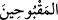
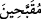
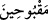
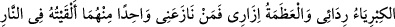
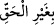

ism-i faili ile ism-i mefulu aynı mânâya gelir, demektir)
Tâcü’l-masâdır’de “kubh”, “kabâhat” ve “kabûhat (çirkin olmak)” şeklindeki
kullanımlarına dikkat çekilmiştir.
Râğıb İsfehânî, bu anlamdan hareketle Müfredât’ında şöyle der: “__WORD__
hoşlanılmayan kötü bir hâl ile damgalanan ve işâretlenen anlamına gelir. Bu kelimede
Allah’ın kâfirler için kullandığı sıfatlara işâret vardır. Allah Teâlâ, kıyamet günü
onların yüzlerinin siyah ve gözlerinin mavi olduğunu ve ayaklarında da zincir ve bukağı
gibi şeyleri sürüklediklerini haber vermektedir.
el-Vasît’ta der ki: “__WORD__; “__WORD__ mânâsınadır. (Yâni bu fiilin sülâsîsi ile tef’îl babı
aynı anlama gelir.) Çirkinleştirilmiş, kötülenmiş, demektir.
et-Te’vîlâtü’n-Necmiyye’de der ki: Çünkü Allah Teâlâ, muhsinlerin yüzlerini güzel
amel ve muâmeleleri nedeniyle güzelleştirdiği gibi, kötülenmiş kimseleri de kötü
muâmeleleri sebebiyle yermiştir. İyiliğin karşılığı iyilik, kötülüğün karşılığı da
kötülüktür.
Yani, büyüklenme (istikbâr) onların (Firavun ve kavminin) kabahatlerinden biridir ve
onları bu kötülükleri işlemelerine ve İsrâiloğullarını da sürmelerine sebep olmuştur.
Rasûlullah (s.a.) bir hadîs-i kudsîde Allah Teâlâ’dan hikaye yoluyla şöyle buyurmuştur:
«
»
“Kibriyâ (büyüklük) benim palto ve abam (ridâm); azâmet benim eteğim (izârım)dır.
Kim bunlardan biri hususunda benimle yarışmaya kalkarsa (çekişirse) onu
cehenneme atarım.”[107]
Hak Teâla, kendisini ridâ ve izâr ile vasfetti de üst gömlek (kamîs) pantolon (serâvîl)
ile tanıtmadı. Çünkü kamîs ve serâvîl tam olarak bedeni kuşatmaz; dolayısıyla bedene
âit vasıfların terkibinden uzaktırlar.
Bil ki; kibir, kendini beğenmekten kaynaklanır. Kendini beğenmek de, güzelliklerin
hakikatını bilmemekten ve cehâletten neşet eder. Hakk’ı kabul etmemek kibirdendir.
Bunun için Allah Teâlâ kibrin kötü âkıbetine dikkat çekerek buyurur ki:
“Bu gün ise yeryüzünde haksız yere büyüklük taslamanızdan ve yoldan
çıkmanızdan dolayı alçaltıcı bir azâb göreceksiniz!” (el-Ahkâf, 46/20)
İnsanlar arasında en çirkin kibir, cimrilik ile birlikte olandır. Bu yüzden Rasûlûllah
(s.a.) şöyle buyurur: “İki huy vardır ki, mü’minde toplanmaz: cimrilik ve
büyüklenmek.” [108] Kim riyaset sâhibi olduğu için kibir gösterirse, bu onun aşağılığına
delâlet eder. Kim de kendi zatının terkibini; başlangıcını, sonunu ve ortasını düşünür ve
bilirse, noksanlığını anlar ve kibri terkeder. Kim zenginlikten dolayı tekebbür ederse
bilsin ki, bu yok olacak bir gölge ve geri verilecek bir emânettir. Burada “__WORD__ (haksız yere)” buyrulması, kibrin bazen öğüldüğüne işâret eder. Meselâ düşman